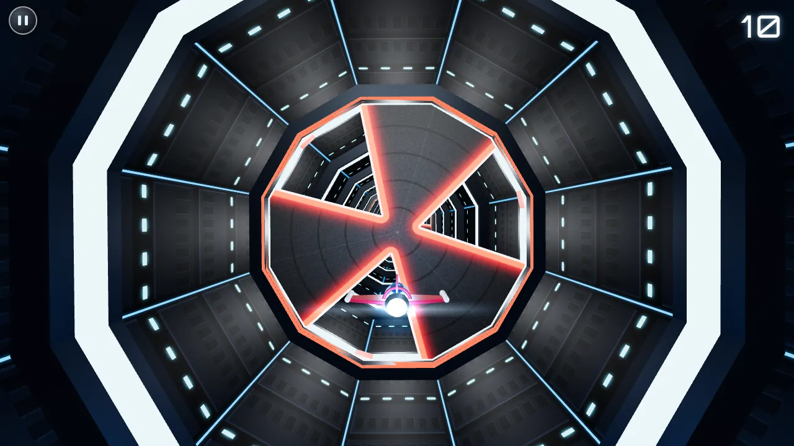

Tunnel Arcade
Endless 3D tunnel flyer
Pilot a small ship through an endless, twisting tunnel. Slip through the gaps in the doors, dodge the bars and, in Mine Mode, steer around drifting mines. The tunnel curves, rolls and changes style the deeper you fly, and the pace keeps building. Inspired by the mobile classic Tunnel Trouble 3D.
- game modes
- 2
- tunnel styles
- 4
- obstacle shapes
- 11
- ways to steer
- 4
- Slow-motion pickups. Grab the glowing hourglass to ease the world down to under half speed for a few seconds. Each one sits on a line that's guaranteed safe to fly through the next obstacle.
- Tilt steering on phones and tablets, alongside the floating joystick, keyboard and gamepad.
- Doors with triangle, half, slot, cross, circle and spoke openings, plus striped bars. Spinning versions unlock as you speed up.
- Four styles modelled on the original: Reactor, Laboratory, Bunker and Catacomb. Best score kept per mode.
- LED dot-matrix “3-2-1-GO!” countdown and a synthwave soundtrack synthesised with WebAudio.
Controls
| Action | Touch | Keyboard | Gamepad |
|---|---|---|---|
| Steer | Drag anywhere, or tilt | Arrows / WASD | Left stick / D-pad |
| Start / retry | Tap a mode / Retry | Enter / Space | A |
| Pause | Pause button | Esc / P | Start |
Optional inverted Y axis. Phones play in landscape.